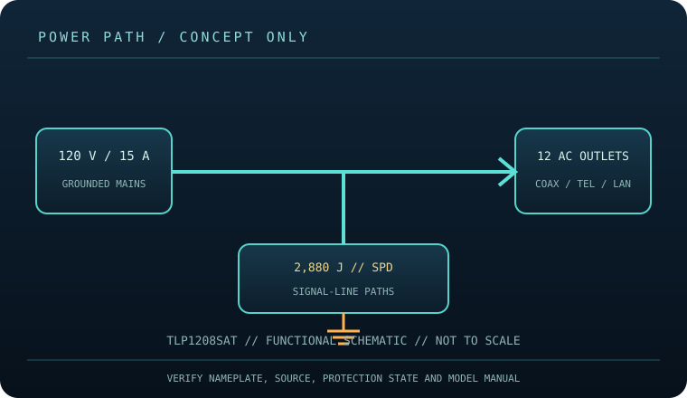

[ SURGE PROTECTIVE DEVICE // STATIC REFERENCE ]
Eaton / Tripp Lite Protect It! TLP1208SAT
Twelve AC outlets, 2,880 J, 120 V / 15 A, 8 ft cord; coax/telephone/Ethernet surge paths per the model literature. This record describes the named model only; verify nameplate, region, revision, approvals and current manufacturer instructions before deployment.

SAFETY SCOPE: Surge protective devices do not provide outage runtime, guarantee protection from every event, repair defective grounding, or replace qualified electrical installation. Capacity and topology below are based on the cited product literature; where a value is not published, it is not guessed.
Model specifications and topology
| Manufacturer / exact model | Eaton / Tripp Lite TLP1208SAT — named North American model; revisions and region-specific suffixes must be checked on the actual label. |
|---|---|
| Class / topology | Cord-connected point-of-use surge suppressor with AC outlet distribution, EMI/RFI filtering, circuit-breaker protection and manufacturer-listed signal-line protection. It contains no backup battery or transfer topology. |
| Electrical capacity | 120 V AC, 15 A maximum, 60 Hz; 12 NEMA 5-15R outlets and an 8 ft cord. The rating limits the aggregate connected load; also obey the upstream branch circuit and each appliance’s nameplate. |
| Surge rating | Manufacturer-listed 2,880 J suppression rating. This is an energy rating for transient suppression, not an equipment load rating, runtime estimate or promise of survival after every surge. |
| Outlets / connection interface | Twelve NEMA 5-15R AC outlets; 8 ft cord. Product literature for the SAT configuration identifies coaxial, telephone/modem and Ethernet protection. Verify all port labels and exact jack count on the unit; route source and protected device through the intended ports. |
| Compatibility | Grounded North American 120 V, 15 A installation and compatible NEMA 5-15P equipment. Signal-line paths are for matching cable services and connectors, not arbitrary wiring. Stay within total current capacity; surge suppression does not make an incompatible voltage, connector or load safe. |
| Battery / runtime | No battery or stored-energy runtime. This product cannot ride through an outage; connected loads lose power when the source or device disconnects. |
| Monitoring / lifecycle | Use only the model’s labeled indicators, alarm, breaker or status display. These features are not proof of building-ground integrity; check manufacturer replacement/failure instructions. |
| Installation / revision control | Read the full model-specific manual and nameplate before installation. Match voltage, phase, current, connector, signal-line type, enclosure rating, revision and approvals; similar product-family names are not evidence of interchangeability. |
Compatibility and application
Grounded North American 120 V, 15 A installation and compatible NEMA 5-15P equipment. Signal-line paths are for matching cable services and connectors, not arbitrary wiring. Stay within total current capacity; surge suppression does not make an incompatible voltage, connector or load safe.
Cord-connected point-of-use surge suppressor with AC outlet distribution, EMI/RFI filtering, circuit-breaker protection and manufacturer-listed signal-line protection. It contains no backup battery or transfer topology.
Confirm the equipment input-voltage range, connector type, circuit capacity and signal path from both equipment manuals. A higher joule number does not increase the permissible connected load and does not, by itself, define clamping behavior or protection lifetime.
Safety, inspection and limits
- Never use a damaged cord, defeated ground, wet location or overloaded circuit. Do not daisy-chain this protector or connect it downstream of another surge protector/UPS unless both device manufacturers explicitly allow that arrangement. Disconnect before cleaning and do not open the mains enclosure.
- Inspect the enclosure, grounding, cord and protection indicator; withdraw a unit showing damage or failed protection. Verify the exact suffix and instructions before relying on the signal-line ports or mounting it. The device does not provide outage backup.
- Surge protection reduces specified transient exposure but cannot guarantee equipment survival from lightning, wiring faults, sustained overvoltage or every conducted path. Follow the model manual and applicable electrical code.
Manufacturer sources and safety references
- Eaton — TLP1208SAT model pageManufacturer SKU page for rating and model identification.
- UL Solutions — surge protective device overviewIndependent safety/certification context for the surge-protective device class; confirm the approval markings on this exact TLP1208SAT unit.
- NFPA — NFPA 70 (National Electrical Code)Electrical installation and grounding requirements depend on the adopted local code.